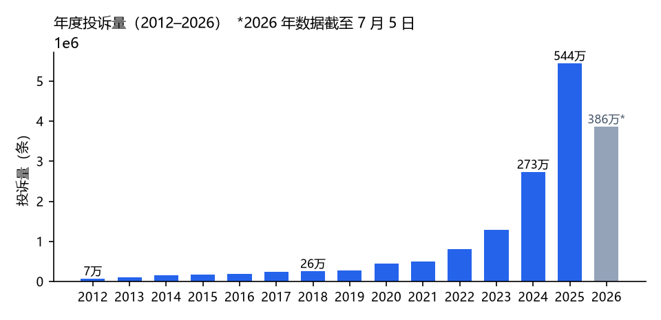
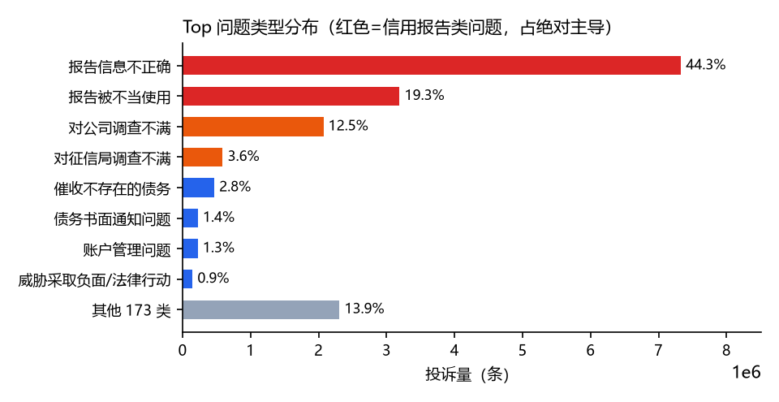
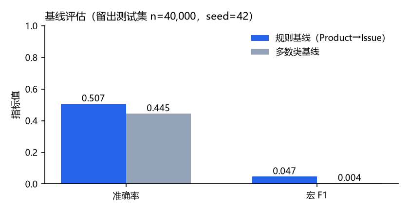

CFPB Consumer Complaint Issue Classification: Problem Definition and Computational Prototype
| 项目阶段 | 阶段 1：问题与计算原型 | 日期 | 2026-10-18 |
| 团队成员 | 邵飞翔、沈勇 | ||
| 仓库地址 | 【填写：Git 仓库 URL】（提交标签：phase-1-submission） | ||
执行摘要。本项目针对美国消费者金融保护局（CFPB）消费者投诉数据库（16,545,376 条记录，8.9 GB，2011-12 至 2026-07）构建投诉问题类型（Issue）的自动分类系统，目标用户为监管机构分流部门与金融机构合规团队。本阶段完成了问题的精确界定、数据的计算建模（流式表示、归一化与校验规则），并实现了一个可复现的规则基线原型（Product→高频 Issue 映射）。在固定种子蓄水池抽样（n=200,000）与 80/20 确定性划分下，规则基线在留出测试集上取得准确率 0.507、宏 F1 0.047，显著优于多数类基线（0.445 / 0.004）。主要局限在于类别分布极度偏斜（信用报告类占 80.8%）与叙事文本仅 23.1% 覆盖。下一阶段将完成数据字典、防泄漏划分与文本特征基线。
本项目为首阶段提交，无前期反馈修订。美国 CFPB 消费者投诉数据库是公开的金融消费纠纷记录库，消费者可就信用报告、债务催收、抵押贷款等问题提交投诉，机构须在法定期限内响应。截至 2026 年 7 月，该库累计 16,545,376 条投诉，且投诉量近十年增长约 32 倍（2015 年 16.8 万条 → 2025 年 544 万条，见图 1）。如此体量下，人工逐条判读投诉并分流至对应处置流程已不可行，自动识别投诉的问题类型（Issue，全库共 181 类）是分流、统计与监管分析的前置环节，也是本项目的切入点。

tools/figures.py 从全量聚合结果复现。任务。多类分类：给定一条消费者投诉在提交时刻可获得的字段，预测其标准化问题类型标签 Issue。
输入。投诉结构化字段（Product、Sub-product、State、Submitted via、Tags 等 8 个离散字段）以及可选的消费者叙事文本（自由文本，平均 1,020 字符，覆盖率 23.1%）。
输出。181 类 Issue 中的一个标签及置信度；当证据不足时系统应输出低置信度而非强行归类。
目标用户与利益相关者。（i）监管机构分流与统计人员——将新投诉路由至对应处置队列；（ii）金融机构合规部门——对自身投诉进行归因归类；（iii）消费者权益研究者。
范围边界。系统仅做问题类型的描述性分类；不做投诉属实性判断、不做责任认定、不提供法律建议；不预测机构处理结果（该任务类别极度不平衡，留作后续工作）。
可衡量的成功定义。在防泄漏的留出测试集上：（i）宏 F1 至少达到多数类基线的 1.3 倍；（ii）准确率不低于规则基线；（iii）全流程可由仓库脚本在固定种子下复现，指标差异 < 0.1%。
动机。投诉量呈非线性增长（2024 年同比 +111.6%、2025 年 +99.1%），而问题类型的分布高度偏斜：前两类信用报告问题合计占 63.6%（图 2）。自动化分类可直接降低分流成本，并为后续的趋势预警提供结构化输入。
相关工作（初步审查）。（1）CFPB 官方数据库及数据字典 [1]：提供标准化 Issue 标注，构成本项目的弱监督标签来源；（2）Kaggle 上的同名数据集与若干社区分析 notebook [2]：多为描述性统计，未给出可复现的分类基线；（3）短文本多类分类的经典方法（词袋 + 逻辑回归、线性 SVM）[3]：作为阶段 3 的可解释比较对象；（4）CFPB 投诉的舆情与信用风险研究 [4]：使用投诉文本做风险信号挖掘，但未处理类别偏斜问题。差距：现有公开工作缺少在全量数据上、带防泄漏划分与可复现协议的分类基线，本项目以工程化的可复现性为切入点。

原始文件为 8.9 GB CSV（16 列）。注意其物理行数（27,656,644）大于记录数（16,545,376），因叙事文本字段内嵌换行符，任何按行切分的解析都是错误的——本原型使用标准 csv 模块流式解析。每条记录表示为 Complaint 数据类：缺失字段统一为 UNKNOWN，州名大写归一，产品名按历史 schema 变更表归一（如 Bank account or service → Checking or savings account）。解析过程维护审计计数器（总行数 / 有效行 / 拒绝行及原因），保证数据处理可核查。
parser.py 流式解析 + 校验 + 归一化 → Complaint 迭代器
sampler.py 蓄水池抽样（O(n) 内存，固定种子） + 确定性 80/20 划分
baseline.py RuleBaselineClassifier：学习 Product→最高频 Issue 映射，
未见产品回退全局多数类；GlobalMajorityBaseline 作对照
evaluate.py 准确率 / 宏 F1 / 分类别 P-R-F1（指标自行实现，可复算）
原型处理流程：全量 CSV → 流式校验解析 → 蓄水池抽样 n=200,000（seed=42）→ 确定性划分（先按 Complaint ID 排序消除文件顺序影响，再以同一种子洗牌切分）→ 训练规则基线 → 留出集评估 → 输出 JSON 指标。
| 操作 | 规模 | 用时 | 内存特征 |
|---|---|---|---|
| 全量流式聚合扫描（两次独立验证） | 16,545,376 条 | 165 s（≈10 万条/秒） | 常数级（计数器基数：产品 16 / 州 64 / 公司 8,037） |
| 蓄水池抽样 + 基线评估 | n = 200,000 | 127 s | O(n) |
| 单元测试（pytest） | 16 项 | 0.2 s | — |
环境：Windows 11，Python 3.13（托管隔离环境）。结论：数据不可整体载入内存，必须流式/分块处理；但聚合与抽样成本线性、可控，普通笔记本即可完成迭代。
基线结果。在留出测试集（n=40,000，类别数 146）上，规则基线准确率 0.507、宏 F1 0.047；多数类基线为 0.445 / 0.004（全局多数类为「Incorrect information on your report」）。规则基线共学习 13 条产品规则。宏 F1 远低于准确率，直接反映类别偏斜：头部类被准确捕获，而大量尾部类（支持度低）拉低宏平均——这正是阶段 3 需要解决的核心问题，而非本阶段的缺陷。

tools/figures.py 从 results/baseline_eval.json 复现。测试与可复现性。仓库含 16 个自动化测试，覆盖：非法日期/缺列行的拒绝与计数、产品历史名归一化、空叙事接受、未见产品的多数类回退、空训练集报错、指标取值域、蓄水池抽样与划分的种子确定性、端到端冒烟测试。pytest 全部通过（0.2 s）。固定种子下重复运行评估脚本，指标完全一致。一次失败的实验：最初按物理行切分 CSV 导致记录数虚高 67%，改用 csv 模块后修正——该教训已写入解析器文档。
| 任务 | 负责人 | 完成标准 |
|---|---|---|
| 数据字典与数据卡片（16 字段逐条文档化） | 邵飞翔 | 附录可查、许可与来源注明 |
| 有目的的 EDA：类别不平衡量化、叙事披露率趋势、缺失模式 | 沈勇 | 每图配解释；至少 1 个改变设计的观察 |
| 防泄漏划分：按时间外划分 + 消费者级去重检查 | 邵飞翔 | 划分脚本可复现，泄漏检查通过 |
| TF-IDF + 逻辑回归文本基线 | 沈勇 | 留出集指标 + 置信区间（重复 5 种子） |
邵飞翔：数据流式解析与抽样模块（src/parser.py、src/sampler.py），含产品名历史 schema 归一化与字段校验规则；测试 1–7（边界输入、归一化与拒绝计数）；全量数据聚合统计与运行时间/可扩展性实测（表 1）。
沈勇：基线与评估模块（src/baseline.py、src/evaluate.py），含指标自行实现与结果可复算；测试 8–16（指标取值域、种子确定性、端到端冒烟）；报告图表生成脚本（tools/figures.py）与阶段 1 报告撰写。
两人共同完成问题定义、局限性与下一阶段计划的讨论与定稿。
本项目使用生成式 AI 助手（WorkBuddy）辅助：代码框架搭建、测试用例设计、报告文字起草。全部统计数字与评估指标均来自本仓库脚本在真实数据上的本地运行；团队成员负责审查代码逻辑、复现运行结果并对全部主张负责。除 matplotlib（图表）与 pytest（测试）外未使用其他第三方库；无外部代码拷贝。
pip install -r requirements.txt pytest tests/ -v python -m src.evaluate --data /path/to/complaints.csv --sample 200000 --seed 42 python tools/figures.py